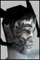

Anarchy Online Bulletin Board > Community > Community Corner > Words for thought: Choose your leaders wisely
Anarchy Online Bulletin Board > Community > Community Corner > Words for thought: Choose your leaders wisely| Pages (2): [1] 2 » |  Last Thread Next Thread Last Thread Next Thread  |
| Author | Thread |
| Cz | Quite a few organisations suffer from inactive leaders, or leaders who disband the organisation without warning. We also have those who get tricked into joining organisations with extremely high tax, then kicked out when they've paid. The basic fact of it all is: The leader owns the organisation. 1. The organisation belongs to the leader. He/she can disband it at any time, with no possibility of intervention from anybody. He/she can quit the game, and never return, leaving the organisation without its most important position 2. The organisation bank belongs to the leader. He/she can take it all and run at any time. He/she can set any tax at any time, and your only options is to pay or leave. 3. The leader represents the organisation towards other organisation leaders. He/she is the only one who have a voice in the chat channel for leaders of your side. Be prepared to be associated with the words of your leader. 4. Omni-Tek and major clans and their representatives look to leaders when they want to contact an organisation. When Community & Events look for active organisations we look for active leaders. If the leader is inactive, your organisation won't show on our lists. The message of it all - the morale of this little write-up - is: Choose your leaders wisely! Let's hear your thoughts about this.  |
 August 26th, 2002 09:42 August 26th, 2002 09:42 | #1 |
| frakk2k Supa Leet  | ? How come noone have posted any replies here? |
| August 26th, 2002 09:49 | #2 |
| Cz | Re: ? quote:The thread is about 10 minutes old, and it's a Monday.  |
| August 26th, 2002 09:50 | #3 |
| frakk2k Supa Leet | *me laughs as he saw the post date on it* FC should be able to assign active players as presidents in inactive guilds. That way some guilds might live on, even when it's original founder have quitted ao. ? |
| August 26th, 2002 10:04 | #4 |
| Intra Supa Leet  | (its also a bank holiday in england... so things may be quiet until the americans get out of bed) |
| August 26th, 2002 10:35 | #5 |
| Fazun Phear Leet | quote:oki, some monday mornin thoughts then ... ,) quote:hmmm would be cool if there were other guild-structures that prevent such behaviour ... quote:air warrior had numerical radio channels (1-999 or so), so if there was some operation goin on (official or player-made) you simply decided on what channels to use and stuff and everythin went fine ... i always thought it's rather stupid havin such an "elite-channel" for the selected few .... make it a tool instead of a privilege .... quote:eeeehehehehe rofl yep i will ehehehehee ,) |
| August 26th, 2002 10:39 | #6 |
| Solarith Leetas  | It'd be good to see a new guild government type to allow an organisation to actively choose and change the guild leader. This would solve a lot of the problems we are currently seeing. The ranking system would be used to make sure those higher in the guild get a reward for their rank so that the higher you are, the more votes you get. So for example :- Applicant = 1 votes Member = 2 votes Veteran = 3 votes Advisor = 4 votes President = 5 votes With this government type, a president would be allowed a short period of time, say 2-3 weeks, where the members of the guild would not be able to initiate a leadership vote, a bit like a term of office. After this time was up any person with rank member or above may start a leadership vote (using the currently ingame guild voting system) to nominate new candidates for president. Members then proceed to vote and after the allotted amount (A week perhaps?) of time, the person with the most votes automatically gets made president and the current president is dropped down to advisor. If the current president wins again, he would have another 2-3 weeks before another vote could be started. A voting system like this would obviously not be available in some of the government types (like Anarchism for example) but it would solve a lot of the problems when guild leaders go Missing In Action or commit some kind of act that the rest of the guild is against and want to do something without disbanding. Those leaders who don't want to take part can always choose another government type to start with. There would obviously need to be some more work on this idea to get around any exploits or workarounds for the system (Stopping people from continually starting votes, maybe one per player per 2 months or something) , but I think it is easily useable with current mechanics and would be a popular choice for the democratic guilds. |
| August 26th, 2002 11:15 | #7 |
| Janey Leet  | Hmmm im kinda new at this game ... i play since one month and i can say that president's are too powerfull towards advisors or generals are whatever the guild structure you use. i suppose presidents powers should be adaptable to each governing form... that's just a thought of a Monday ... 2:30 pm, at work, and no awake yet ... |
| August 26th, 2002 12:29 | #8 |
| Hypos Supa Leet  | quote:A GM actually did this for my guild. Our president quit without saying anything. After a couple months, we petitioned for help and FunCom assigned the leadership position to another player. |
| August 26th, 2002 15:17 | #9 |
| Pepin Leetas  | Re: Words for thought: Choose your leaders wisely quote: Make the chat read-only for lvl 50+, so people can have an opinion of what every leader has to say in this 'shoot-the-breeze-amongst-leaders" channel... After all, today's IRL politic scene implies that political leaders/parties have an access to *mass* media, to talk, persuade (or slander )...I've found it pretty... awkward that *some* OT Guild Leaders have placed other Leaders on /ignore, for example... This read-only chat would reward the most charismatic & sympathetic leaders, and punish the brash, tyranic, or selfish kewl doodz... |
| August 26th, 2002 15:42 | #10 |
| Zepto Leetas  | How are active leaders decided? For example, what size guild and what activity level of a leader would allow a leader to get a invite into the CoT building? |
| August 26th, 2002 15:46 | #11 |
| Graukonig Leetas  | What they should do is allow certain org types to vote for their leader and whether to spend money on something. A certain amount of the command staff and general members should be required to take part in the vote in order for it to be valid and the voting should last at least an entire day. Those rule prevent people from forcing through actions when there isn't anyone online to counter them. Such addition would make it the type of government an org has more important and more realistic. For instance the more democratic organizations would be less prone to corruption since they vote on leaders and tax collection/spending but they would also take longer to get things done. |
| August 26th, 2002 15:47 | #12 |
| Jynne Supa Leet  | Intentional malfeasance by an org leader is more or less unpreventable. Indeed, many org members, if they consciously and willfully choose to harm the organization, are capable of it somehow. So I'm not going to address org leaders who are intentionally trying to screw people over. This is an idea for how to mitigate against inactive or quit leaders who did not step down and are thus leaving their org hanging. I think every form of organization should be expanded by 1 ranking. This rank would be Assistant Leader. Vice President. Whatever you want to call it. For purposes of org commands and powers, the Assistant Leader should always have the ability to invite and remove people, and to participate on the Org Leader channel. Only one person could fill this position at a time. Maybe the Assistant Leader should also have the ability to lower or turn off the org tax, but not to raise it, and other forms of limited access to currently leader-only commands. This would let the Assistant try to undo or mitigate any damage a leader gone bad might try to cause. The assistant leader should also be listed in /org info ingame, as a contact for outsiders. If the org leader should leave the org, cancel their account, or be inactive for a sufficient period of time (say three weeks), full leadership rank would automatically transfer to the Assistant Leader. Provided the org leader hasn't left the org, they would automatically be demoted to the highest-level non-Assistant Leader rank. Having an Assistant Leader wouldn't be mandatory, but it would be a mechanism whereby an inactive or incapacitated leader could be smoothly replaced. If such a position existed I would be very wary of joining an organization that wasn't making use of it. If the org leader comes back and finds that they have 'lost' control of their org... well, you snooze, you lose. A leader should have chosen an Assistant they trust to use their power wisely and to hand back control of the guild if they had to take it over. |
| August 26th, 2002 15:57 | #13 |
| Menlas Soleet  | I like this idea of Vice-leader It would solve lots of the problem we can have indeed. |
| August 26th, 2002 16:29 | #14 |
| Tahrus Leetas  | I agree with this article completely. I try to be a good leader to my Clan, though I've never been a Guild Leader before in any game I've played. I think I am doing a good job, since most of my guild is still with me however I am in the US Army. Therefore the nature of my job tends to keep me away from home for weeks at a time. I make it a point that before I leave to go anywhere, I demote myself to General and give the President Title to one of my Guild Officers. that way the guild has a leader while I am gone. one question though. What Criteria do the GMs use to determine 'active' Clan Leaders? and How would one get selected to take part in an event or meeting? like the meeting with Radiman that I missed cause of the Army(i think my second in command went to the meeting in my place though) |
| August 26th, 2002 16:31 | #15 |
| Sallust Supa Leet  | Org Structure Well I have a lot of problems with the guild structure period (not being as promised a year ago), but I'll try to keep it on subject of the leaders. First off I am a leader and supposedly of a Republic, but I feel that the current system doesn't allow other members enough of a say. Most importantly of all there should be some way of voting in a new leader should one EVER be inactive (maybe an automatic voting process from senior ranks) or their account canceled in any way. The entire org shouldn't be held hostage for a non-existant leader. It's simply ridiculous and if you're serious about "boosting" the organizations in this new product. You should put the original proposed content (org structures, clan advantage, governingforms that mean something) and fix up the org bugs first. The bank, tax and everything else about the clan should show in a target window. Why do we get a long description of it in the chat box? It would help players a lot if the /org info description showed up in a way where you actually felt like reading it, instead of being a cluttered mess in your chat box. |
| August 26th, 2002 22:05 | #16 |
| Sheffy Supa Leet | Re: Words for thought: Choose your leaders wisely quote:You could make this harder for leaders to do by prompting each member when they are about to pay an org tax. A simple window that pops up saying "It is org tax time. Your leader has set the tax to x%, meaning you owe xxxxx credits. Pay this amount now? Clicking NO means you leave the organisation." Or something to that effect, so that leaders can't easily trick people like this and totally rip innocent people off. You can't reasonably expect everybody to trust the person who invites them into their first guild, although in a perfect world that would be fair to say. But as we all know, some people can be total jerks quote:There should be a way for the guild to give leadership to somebody else, but I can't think of a good way to do this other than /petition because otherwise, a voting system or some sorts would allow the guild to impeech and overthrow the president, which I don't think is in the scope of leading a guild. quote:I know many presidents who would prefer to allow advisors access to the guild bank. The president chooses nobody other than his most trusted companions to be his Advisors, why not allow them access to the bank so that the president is not the one constantly asked when someone needs a little cash? Advisors are already trusted to kick and invite members. Maybe add an /org option to allow Advisors access to the org bank, only settable by the President? On or off. quote:Erm, could you define "active" for us? Do they need to just log in every X weeks? What if the president puts his main on hold for a bit and plays an alt for a while who is an advisor? (I guess you could argue he could make his alt the new president, but each character has a reputation..) --Tsk |
| August 27th, 2002 19:45 | #17 |
| Raiko Soleet  | For anyone looking into joining a guild (and many guilds will be seeking your membership now) you could do a lot worse than doing some research at Ymera.com. Its worth finding out; how long the org has been going, how long the leader has been in that position, how long people have been members. Also youll get a general impression of how active it is by the chekcing the levels gained that week. Not the best and only indicator, but it all helps build a picture. All this is not to say of course a brand new guild does not deserve your trust. |
| August 27th, 2002 23:39 | #18 |
| Yesiamstoned Am I dead yet?  | The one and only fact that remains is that the guild members make the guild. Yes you look to leaders for guidance and help etc. but if no one wants to be active and put something back into the guild(not creds, I hate taxes) then what is it worth. Speak up a bit with Ideas etc and make the leads do thier jobs. If the leaders don't know what you are after then how can they lead effectively and/or speak up for you in discussions with FC wich on occassion may happen. ----->>> shamless plug for guild JOIN US Omni-Tek Mental Ward You know deep down this is where you belong Formerly Yesiamstoned(Name changed after 9 months) 146 NT General Omni-tek Mental Ward |
| August 28th, 2002 02:25 | #19 |
| Daeem Leetas | Taxes for orginization Would it be possible to just use the tax system to have the members pay for the benefits of being in my orginization?? Much as the following: Higher rank More cost Better benefits OT personel should be paid by Omni for doing their assigned jobs. (Hello Omni-Pol, patrol area 51, any players in this area get paid whatever per hour and for all aspects are treated as guards) Clanners pay for the skill bonus. Neutural guilds however wouldn't get any bonus unless they're affiliated with the ICC and are "Dedicated to the galactic economys well being" and such... I'd like to know if this could be possible. Please lable it the "Pay Per Buff" special. |
| August 28th, 2002 16:21 | #20 |
| Pages (2): [1] 2 » | The saved copy (Funcom's forum archive, saved by the Wayback Machine in 2025) |
All times are GMT.